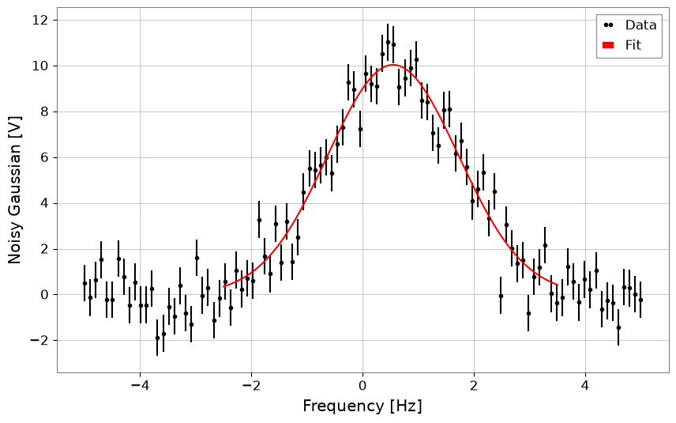
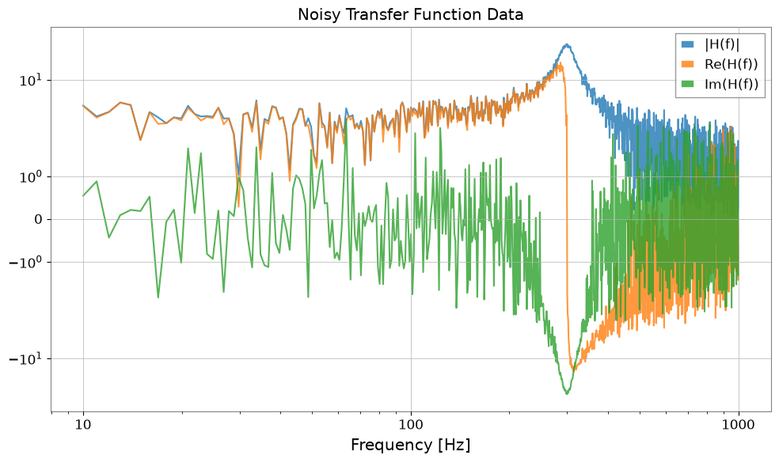
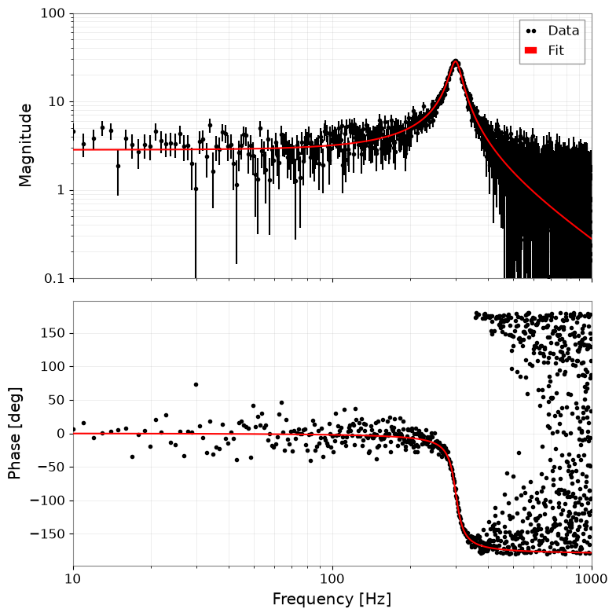
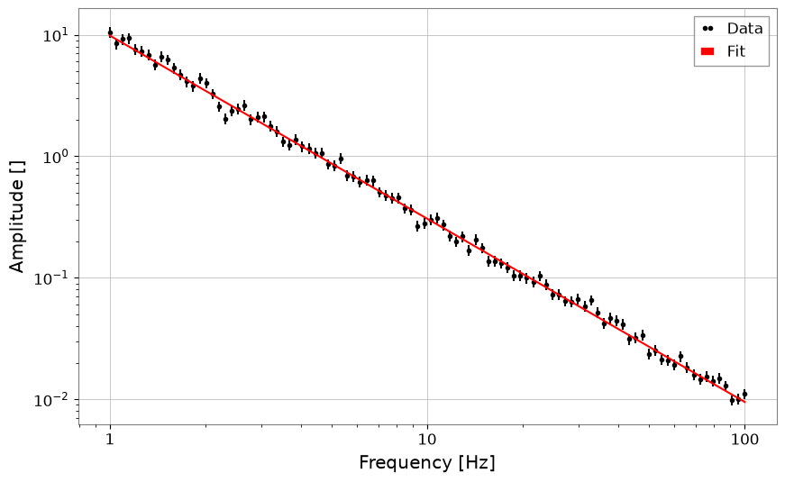
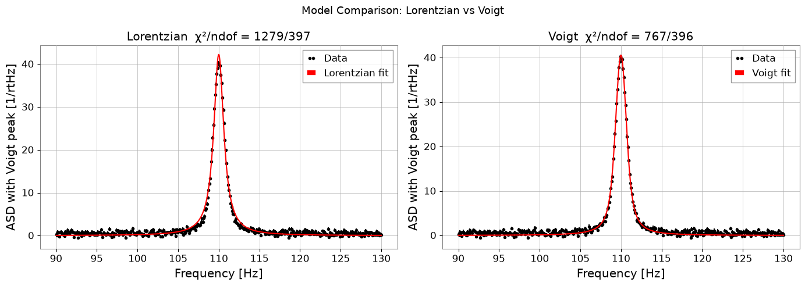

フィッティング: スペクトル線解析#
このノートブックでは、gwexpy.fitting モジュールを使って TimeSeries や FrequencySeries のデータを手軽にフィッティングする方法を示します。バックエンドには iminuit を採用しており、誤差を考慮した最小二乗フィッティングが可能です。
import warnings
warnings.filterwarnings("ignore", category=UserWarning)
warnings.filterwarnings("ignore", category=DeprecationWarning)
import matplotlib.pyplot as plt
import numpy as np
from gwexpy.frequencyseries import FrequencySeries
from gwexpy.plot import Plot
from gwexpy.timeseries import TimeSeries
plt.rcParams["figure.figsize"] = (10, 6)
1. データの準備#
ここでは、ガウス関数にノイズを加えたダミーデータを作成します。
# Define model function (Gaussian)
def gaussian(x, a, mu, sigma):
return a * np.exp(-((x - mu) ** 2) / (2 * sigma**2))
# Generate dummy data on an explicit x-axis
np.random.seed(42)
x = np.linspace(-5, 5, 100)
true_params = {"a": 10, "mu": 0.5, "sigma": 1.2}
y_true = gaussian(x, **true_params)
y_noise = y_true + np.random.normal(0, 1.0, size=len(x))
# Use FrequencySeries so the fit axis matches the synthetic x values
ts = FrequencySeries(y_noise, frequencies=x, name="Noisy Gaussian", unit="V")
ts.plot(title="Noisy Data for Gaussian Fit");

2. フィッティングの実行#
ts.fit() メソッドを使用してフィッティングを行います。 引数にはモデル関数と、パラメータの初期値 p0 を指定します。
狭いピークや局在したピークでは、中心周波数と幅に物理的に妥当な範囲を与え、ノイズだけの局所解へ流れないようにします。
# Fitting
# Keep the initial center near the visible peak and bound (mu, sigma) to plausible values
gaussian_limits = {"mu": (-2.0, 2.0), "sigma": (0.2, 3.0)}
result = ts.fit(
gaussian,
sigma=0.8,
p0={"a": 8.0, "mu": 0.0, "sigma": 1.0},
limits=gaussian_limits,
)
# Display results
display(result)
| Migrad | |
|---|---|
| FCN = 125.2 (χ²/ndof = 1.3) | Nfcn = 85 |
| EDM = 1e-07 (Goal: 0.0002) | |
| Valid Minimum | Below EDM threshold (goal x 10) |
| No parameters at limit | Below call limit |
| Hesse ok | Covariance accurate |
| Name | Value | Hesse Error | Minos Error- | Minos Error+ | Limit- | Limit+ | Fixed | |
|---|---|---|---|---|---|---|---|---|
| 0 | a | 10.05 | 0.21 | |||||
| 1 | mu | 0.550 | 0.029 | -2 | 2 | |||
| 2 | sigma | 1.171 | 0.028 | 0.2 | 3 |
| a | mu | sigma | |
|---|---|---|---|
| a | 0.0461 | -0 (-0.005) | -3.5e-3 (-0.569) |
| mu | -0 (-0.005) | 0.000845 | 0 (0.008) |
| sigma | -3.5e-3 (-0.569) | 0 (0.008) | 0.00081 |
3. 結果の取得とプロット#
FitResult オブジェクトから、ベストフィットパラメータや誤差、Chi2 値などを取得できます。 また、.plot() メソッドで簡単に結果を可視化できます。
print("Best Fit Parameters:", result.params)
print("Errors:", result.errors)
print("Chi2:", result.chi2)
print("NDOF:", result.ndof)
# Plot
fig, ax = plt.subplots(figsize=(10, 6))
result.plot(ax=ax, color="red", linewidth=2)
ax.set_title("Gaussian Fit Demo")
# When using auto-gps, let GWpy handle xlabel (includes epoch)
ax.set_ylabel("Amplitude")
plt.show()
Best Fit Parameters: {'a': 10.053068004204636, 'mu': 0.5500233455726176, 'sigma': 1.1710489113863423}
Errors: {'a': 0.21465081142898548, 'mu': 0.029072612232381, 'sigma': 0.02846288328581481}
Chi2: 125.15392534185452
NDOF: 97

4. 文字列によるモデル指定#
モデル関数を定義する代わりに、定義済みのモデル名を文字列で指定することもできます。 現在サポートされているモデル: 'gaus', 'exp', 'pol0', 'pol1', ... 'pol9', 'landau' など。
以下は 'gaus' を指定してフィッティングを行う例です。こちらも、目に見えているピーク帯域だけを切り出して callable 版と同じ問題設定に揃えます。
# Fit using string 'gaus'
# Note: Parameter names for predefined models are fixed (for Gaussian: A, mu, sigma)
result_str = ts.fit(
"gaus",
p0={"A": 8.0, "mu": 0.0, "sigma": 1.0},
x_range=(-2.5, 3.5),
sigma=0.8,
limits={"mu": (-2.0, 2.0), "sigma": (0.2, 3.0)},
)
# Display results
display(result_str)
result_str.plot();
| Migrad | |
|---|---|
| FCN = 81.36 (χ²/ndof = 1.4) | Nfcn = 85 |
| EDM = 1.24e-08 (Goal: 0.0002) | |
| Valid Minimum | Below EDM threshold (goal x 10) |
| No parameters at limit | Below call limit |
| Hesse ok | Covariance accurate |
| Name | Value | Hesse Error | Minos Error- | Minos Error+ | Limit- | Limit+ | Fixed | |
|---|---|---|---|---|---|---|---|---|
| 0 | A | 10.04 | 0.22 | |||||
| 1 | mu | 0.548 | 0.029 | -2 | 2 | |||
| 2 | sigma | 1.175 | 0.029 | 0.2 | 3 |
| A | mu | sigma | |
|---|---|---|---|
| A | 0.0466 | 0 (0.002) | -3.7e-3 (-0.578) |
| mu | 0 (0.002) | 0.000854 | -0 (-0.003) |
| sigma | -3.7e-3 (-0.578) | -0 (-0.003) | 0.000858 |

5. 複素数フィッティング (伝達関数)#
伝達関数などの複素数データに対してもフィッティングを行えます。 コスト関数として \(\chi^2 = \sum (Re_{diff})^2 + \sum (Im_{diff})^2\) を最小化し、実部と虚部を同時にフィットします。 結果のプロットは自動的にボード線図（振幅・位相）になります。
# 1. Define complex model (simple pole)
def pole_model(f, A, f0, Q):
# H(f) = A / (1 + i * Q * (f/f0 - f0/f))
# Low-pass filter like but simplified. Let's use standard mechanical transfer function:
# H(f) = A / [ (f0^2 - f^2) + i * (f0 * f / Q) ]
omega = 2 * np.pi * f
omega0 = 2 * np.pi * f0
return A / ((omega0**2 - omega**2) + 1j * (omega0 * omega / Q))
# 2. Generate data
f = np.linspace(10, 1000, 1000)
p_true = {"A": 1e7, "f0": 300, "Q": 10}
data_clean = pole_model(f, **p_true)
# Add noise (real and imaginary parts independent)
np.random.seed(0)
noise_re = np.random.normal(0, 5, len(f))
noise_im = np.random.normal(0, 5, len(f))
data_noisy = data_clean + 0.2 * noise_re + 0.2j * noise_im
# Create FrequencySeries
fs = FrequencySeries(data_noisy, frequencies=f, name="Transfer Function")
plot = Plot(fs.abs(), fs.real, fs.imag, xscale="log", yscale="symlog", alpha=0.8)
plt.legend(["|H(f)|", "Re(H(f))", "Im(H(f))"])
plt.title("Noisy Transfer Function Data")
plt.tight_layout()
plt.show()

# 3. Fitting
print("Fit Start...")
# Use shifted initial values
result_complex = fs.fit(pole_model, sigma=1.0, p0={"A": 0.8e7, "f0": 320, "Q": 8})
# Display results
display(result_complex)
# 4. Plot (Bode plot)
# Automatically becomes amplitude and phase plots
result_complex.bode_plot()
plt.gcf().get_axes()[0].set_ylim(1e-1, 1e2)
plt.tight_layout()
plt.show()
Fit Start...
| Migrad | |
|---|---|
| FCN = 1907 (χ²/ndof = 1.0) | Nfcn = 102 |
| EDM = 1.21e-09 (Goal: 0.0002) | |
| Valid Minimum | Below EDM threshold (goal x 10) |
| No parameters at limit | Below call limit |
| Hesse ok | Covariance accurate |
| Name | Value | Hesse Error | Minos Error- | Minos Error+ | Limit- | Limit+ | Fixed | |
|---|---|---|---|---|---|---|---|---|
| 0 | A | 10.09e6 | 0.07e6 | |||||
| 1 | f0 | 300.24 | 0.11 | |||||
| 2 | Q | 9.99 | 0.10 |
| A | f0 | Q | |
|---|---|---|---|
| A | 5.4e+09 | 795.222 (0.099) | -5.296459e3 (-0.707) |
| f0 | 795.222 (0.099) | 0.0118 | -0.000 (-0.035) |
| Q | -5.296459e3 (-0.707) | -0.000 (-0.035) | 0.0104 |

6. MCMC 解析 (emcee)#
iminuit で得られた最尤推定値を初期値として、emcee を用いた MCMC (Markov Chain Monte Carlo) 解析を行うことができます。
注意: この機能を使うには
emceeとcornerのインストールが必要です。
# Run MCMC
# n_walkers: number of walkers, n_steps: number of steps, burn_in: number of initial steps to discard
try:
sampler = result_complex.run_mcmc(n_walkers=32, n_steps=1000, burn_in=200)
# Create corner plot (visualize posterior distribution)
# Display true values (or maximum likelihood estimates) with blue lines
result_complex.plot_corner()
except ImportError as e:
print(e)
except Exception as e:
print(f"MCMC Error: {e}")
0%| | 0/1000 [00:00<?, ?it/s]
3%|▎ | 28/1000 [00:00<00:03, 277.79it/s]
6%|▌ | 56/1000 [00:00<00:03, 275.62it/s]
8%|▊ | 84/1000 [00:00<00:03, 276.47it/s]
11%|█ | 112/1000 [00:00<00:03, 277.77it/s]
14%|█▍ | 141/1000 [00:00<00:03, 278.77it/s]
17%|█▋ | 169/1000 [00:00<00:02, 278.31it/s]
20%|█▉ | 198/1000 [00:00<00:02, 278.93it/s]
23%|██▎ | 226/1000 [00:00<00:02, 279.13it/s]
25%|██▌ | 254/1000 [00:00<00:02, 279.15it/s]
28%|██▊ | 282/1000 [00:01<00:02, 277.83it/s]
31%|███ | 310/1000 [00:01<00:02, 275.70it/s]
34%|███▍ | 338/1000 [00:01<00:02, 276.48it/s]
37%|███▋ | 366/1000 [00:01<00:02, 276.99it/s]
39%|███▉ | 394/1000 [00:01<00:02, 277.33it/s]
42%|████▏ | 422/1000 [00:01<00:02, 276.78it/s]
45%|████▌ | 450/1000 [00:01<00:01, 277.05it/s]
48%|████▊ | 478/1000 [00:01<00:01, 277.14it/s]
51%|█████ | 506/1000 [00:01<00:01, 277.07it/s]
53%|█████▎ | 534/1000 [00:01<00:01, 277.03it/s]
56%|█████▌ | 562/1000 [00:02<00:01, 277.04it/s]
59%|█████▉ | 590/1000 [00:02<00:01, 277.17it/s]
62%|██████▏ | 618/1000 [00:02<00:01, 277.34it/s]
65%|██████▍ | 646/1000 [00:02<00:01, 277.12it/s]
67%|██████▋ | 674/1000 [00:02<00:01, 277.03it/s]
70%|███████ | 702/1000 [00:02<00:01, 276.57it/s]
73%|███████▎ | 730/1000 [00:02<00:00, 276.83it/s]
76%|███████▌ | 759/1000 [00:02<00:00, 277.74it/s]
79%|███████▊ | 787/1000 [00:02<00:00, 277.92it/s]
82%|████████▏ | 815/1000 [00:02<00:00, 278.42it/s]
84%|████████▍ | 843/1000 [00:03<00:00, 278.58it/s]
87%|████████▋ | 871/1000 [00:03<00:00, 277.52it/s]
90%|████████▉ | 899/1000 [00:03<00:00, 277.40it/s]
93%|█████████▎| 927/1000 [00:03<00:00, 277.49it/s]
96%|█████████▌| 955/1000 [00:03<00:00, 278.05it/s]
98%|█████████▊| 983/1000 [00:03<00:00, 277.41it/s]
100%|██████████| 1000/1000 [00:03<00:00, 277.44it/s]

新しい共通モデルの使用例#
gwexpy.fitting.models に追加された power_law と damped_oscillation の使用例です。
from gwexpy.fitting.models import damped_oscillation, power_law
# Power law
x = np.logspace(0, 2, 100)
y = power_law(x, A=10, alpha=-1.5) * (1 + 0.1 * np.random.normal(size=len(x)))
fs = FrequencySeries(y, frequencies=x)
res_pl = fs.fit("power_law", p0={"A": 5, "alpha": -1}, sigma=y * 0.1)
print("Power law alpha:", res_pl.params["alpha"])
display(res_pl)
res_pl.plot()
plt.xscale("log")
plt.yscale("log")
plt.show()
plt.close()
# Damped oscillation
t = np.linspace(0, 1, 1000)
y_osc = damped_oscillation(t, A=1, tau=0.3, f=10) + 0.05 * np.random.normal(size=len(t))
ts_osc = TimeSeries(y_osc, times=t)
res_osc = ts_osc.fit(
"damped_oscillation", p0={"A": 0.5, "tau": 0.5, "f": 12}, sigma=0.05
)
print("Damped oscillation frequency:", res_osc.params["f"])
display(res_osc)
res_osc.plot();
Power law alpha: -1.507325448901415
| Migrad | |
|---|---|
| FCN = 102.8 (χ²/ndof = 1.0) | Nfcn = 90 |
| EDM = 6.45e-06 (Goal: 0.0002) | |
| Valid Minimum | Below EDM threshold (goal x 10) |
| No parameters at limit | Below call limit |
| Hesse ok | Covariance accurate |
| Name | Value | Hesse Error | Minos Error- | Minos Error+ | Limit- | Limit+ | Fixed | |
|---|---|---|---|---|---|---|---|---|
| 0 | A | 9.84 | 0.20 | |||||
| 1 | alpha | -1.507 | 0.008 |
| A | alpha | |
|---|---|---|
| A | 0.04 | -1.33e-3 (-0.869) |
| alpha | -1.33e-3 (-0.869) | 5.88e-05 |

Damped oscillation frequency: 9.993425925552833
| Migrad | |
|---|---|
| FCN = 917.9 (χ²/ndof = 0.9) | Nfcn = 192 |
| EDM = 6.02e-07 (Goal: 0.0002) | |
| Valid Minimum | Below EDM threshold (goal x 10) |
| No parameters at limit | Below call limit |
| Hesse ok | Covariance accurate |
| Name | Value | Hesse Error | Minos Error- | Minos Error+ | Limit- | Limit+ | Fixed | |
|---|---|---|---|---|---|---|---|---|
| 0 | A | 1.002 | 0.008 | |||||
| 1 | tau | 0.301 | 0.004 | |||||
| 2 | f | 9.993 | 0.006 | |||||
| 3 | phi | 0.010 | 0.008 |
| A | tau | f | phi | |
|---|---|---|---|---|
| A | 6.91e-05 | -0.021e-3 (-0.717) | 0 (0.072) | -0.01e-3 (-0.104) |
| tau | -0.021e-3 (-0.717) | 1.28e-05 | -0.001e-3 (-0.048) | 0.002e-3 (0.072) |
| f | 0 (0.072) | -0.001e-3 (-0.048) | 3.95e-05 | -0.04e-3 (-0.713) |
| phi | -0.01e-3 (-0.104) | 0.002e-3 (0.072) | -0.04e-3 (-0.713) | 6.74e-05 |

7. スペクトル線フィッティング：ローレンツ関数と Voigt プロファイル#
重力波検出器のコミッショニングでは、狭帯域の共振（機械モード、バイオリンモード、ライン注入）が ASD スペクトル上に鋭いピークとして現れます。一般的に次の 3 つのプロファイルが用いられます：
モデル |
使いどき |
|---|---|
ガウシアン |
ドップラー・圧力広がり；対称なノイズピーク |
ローレンツィアン |
単一損失機構による共振（Q 値で幅が決まる） |
フォークト |
ガウス（計器分解能）＋ローレンツ（減衰）の複合広がり |
いずれも gwexpy.fitting.models に実装済みで、文字列名での指定が可能です。
7a. ローレンツ関数（HWHM パラメータ化）#
A: ピーク振幅x0: 中心周波数gamma: 半値半幅 (HWHM)
from gwexpy.fitting.models import lorentzian, voigt
# ── Synthetic ASD with a Lorentzian resonance peak ──────────────
np.random.seed(0)
freqs = np.linspace(90, 130, 400) # Hz, around a 110 Hz mode
TRUE_A, TRUE_X0, TRUE_GAMMA = 50.0, 110.0, 0.8
y_lorenz = lorentzian(freqs, TRUE_A, TRUE_X0, TRUE_GAMMA)
noise = np.random.normal(0, 0.5, len(freqs))
y_data = y_lorenz + noise + 1.0 # +1 flat background
fs_lorenz = FrequencySeries(y_data, frequencies=freqs,
name='ASD with Lorentzian peak', unit='1/rtHz')
# ── Fit ─────────────────────────────────────────────────────────
res_lorenz = fs_lorenz.fit(
'lorentzian',
p0={'A': 30.0, 'x0': 112.0, 'gamma': 1.5},
sigma=0.5,
)
print(f"True A={TRUE_A}, x0={TRUE_X0}, gamma={TRUE_GAMMA}")
print(f"Fit A={res_lorenz.params['A']:.2f} ± {res_lorenz.errors['A']:.2f}")
print(f" x0={res_lorenz.params['x0']:.3f} ± {res_lorenz.errors['x0']:.3f}")
print(f" gamma={res_lorenz.params['gamma']:.3f} ± {res_lorenz.errors['gamma']:.3f}")
fig, ax = plt.subplots(figsize=(10, 5))
res_lorenz.plot(ax=ax, label='Lorentzian fit')
ax.set_xlabel('Frequency [Hz]')
ax.set_ylabel('ASD [1/√Hz]')
ax.set_title('Lorentzian Spectral Line Fit')
ax.legend()
plt.tight_layout()
plt.show()
True A=50.0, x0=110.0, gamma=0.8
Fit A=50.50 ± 0.20
x0=110.000 ± 0.003
gamma=0.851 ± 0.005

7b. ローレンツ Q 値パラメータ化#
共振器では線幅を品質係数 \(Q = x_0 / (2\gamma)\) で表すと直感的です：
'lorentzian_q' を使うと (A, x0, Q) を直接フィットできます。
TRUE_Q = TRUE_X0 / (2 * TRUE_GAMMA) # ~68.75
res_q = fs_lorenz.fit(
'lorentzian_q',
p0={'A': 30.0, 'x0': 112.0, 'Q': 50.0},
sigma=0.5,
)
print(f"True Q = {TRUE_Q:.2f}")
print(f"Fit Q = {res_q.params['Q']:.2f} ± {res_q.errors['Q']:.2f}")
print(f" x0 = {res_q.params['x0']:.3f} ± {res_q.errors['x0']:.3f} Hz")
fig, ax = plt.subplots(figsize=(10, 5))
res_q.plot(ax=ax, label=f"Q = {res_q.params['Q']:.1f}")
ax.set_xlabel('Frequency [Hz]')
ax.set_ylabel('ASD [1/√Hz]')
ax.set_title('Lorentzian Q-factor Fit')
ax.legend()
plt.tight_layout()
plt.show()
True Q = 68.75
Fit Q = 64.63 ± 0.36
x0 = 110.000 ± 0.003 Hz

7c. Voigt プロファイル#
Voigt プロファイルはガウス関数（幅 \(\sigma\)）とローレンツ関数（HWHM \(\gamma\)）の畳み込みです。効率化のため Faddeeva 関数 を用いて計算されます。
計器分解能による広がり（ガウス）と固有の減衰（ローレンツ）の両方がラインに見られる場合に使います。
# ── Synthetic data with mixed broadening ─────────────────────────
TRUE_SIGMA, TRUE_GAMMA_V = 0.5, 0.4
y_voigt = voigt(freqs, A=40.0, x0=110.0, sigma=TRUE_SIGMA, gamma=TRUE_GAMMA_V)
y_data_v = y_voigt + np.random.normal(0, 0.4, len(freqs)) + 0.5
fs_voigt = FrequencySeries(y_data_v, frequencies=freqs,
name='ASD with Voigt peak', unit='1/rtHz')
# Fit Lorentzian (wrong model) for comparison
res_l = fs_voigt.fit('lorentzian', p0={'A': 30.0, 'x0': 111.0, 'gamma': 0.8},
sigma=0.4)
# Fit Voigt (correct model)
res_v = fs_voigt.fit('voigt',
p0={'A': 30.0, 'x0': 111.0, 'sigma': 0.6, 'gamma': 0.5},
sigma=0.4)
print(f"Lorentzian chi2/ndof = {res_l.chi2:.1f}/{res_l.ndof}")
print(f"Voigt chi2/ndof = {res_v.chi2:.1f}/{res_v.ndof}")
print(f"Recovered sigma={res_v.params['sigma']:.3f} (true {TRUE_SIGMA}),"
f" gamma={res_v.params['gamma']:.3f} (true {TRUE_GAMMA_V})")
fig, axes = plt.subplots(1, 2, figsize=(14, 5))
res_l.plot(ax=axes[0], label='Lorentzian fit')
axes[0].set_title(f"Lorentzian χ²/ndof = {res_l.chi2:.0f}/{res_l.ndof}")
axes[0].set_xlabel('Frequency [Hz]')
axes[0].legend()
res_v.plot(ax=axes[1], label='Voigt fit')
axes[1].set_title(f"Voigt χ²/ndof = {res_v.chi2:.0f}/{res_v.ndof}")
axes[1].set_xlabel('Frequency [Hz]')
axes[1].legend()
plt.suptitle('Model Comparison: Lorentzian vs Voigt', fontsize=13)
plt.tight_layout()
plt.show()
Lorentzian chi2/ndof = 1278.6/397
Voigt chi2/ndof = 766.8/396
Recovered sigma=0.415 (true 0.5), gamma=0.522 (true 0.4)
